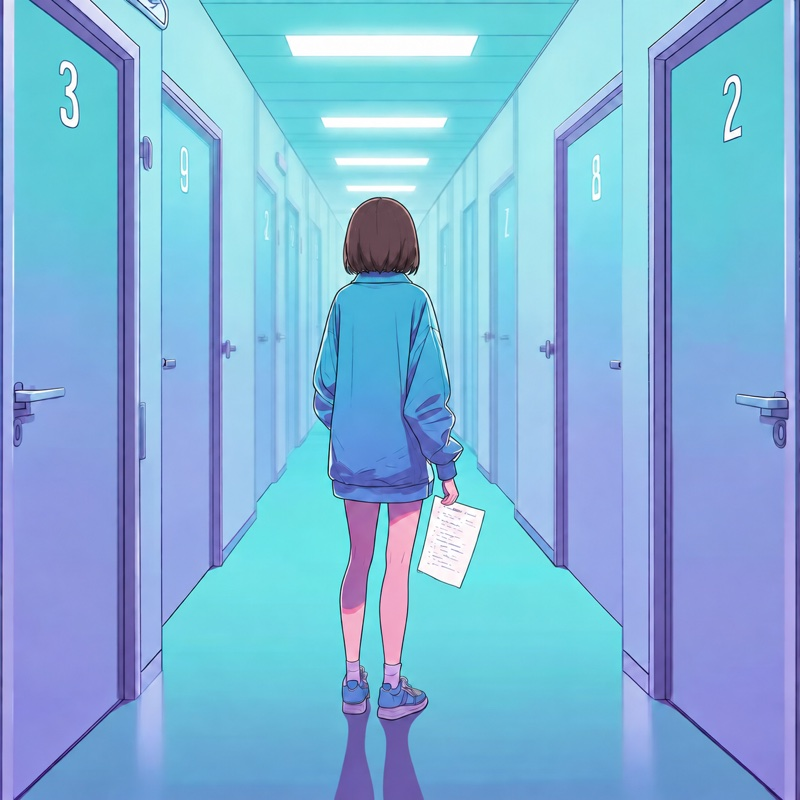
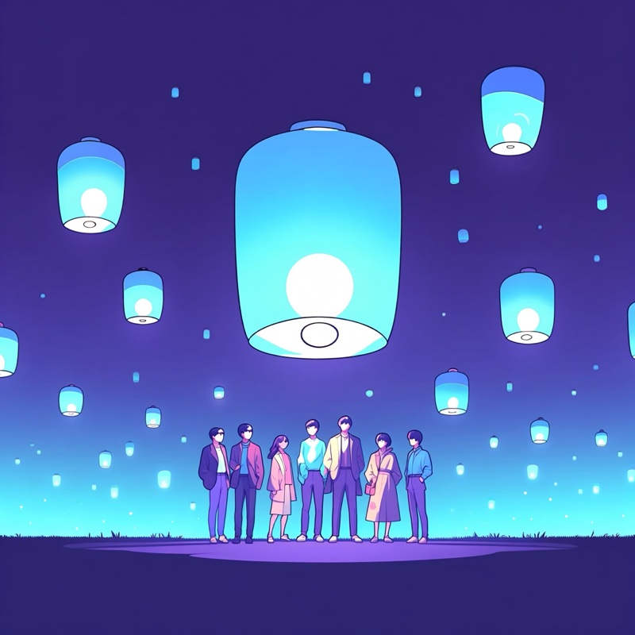
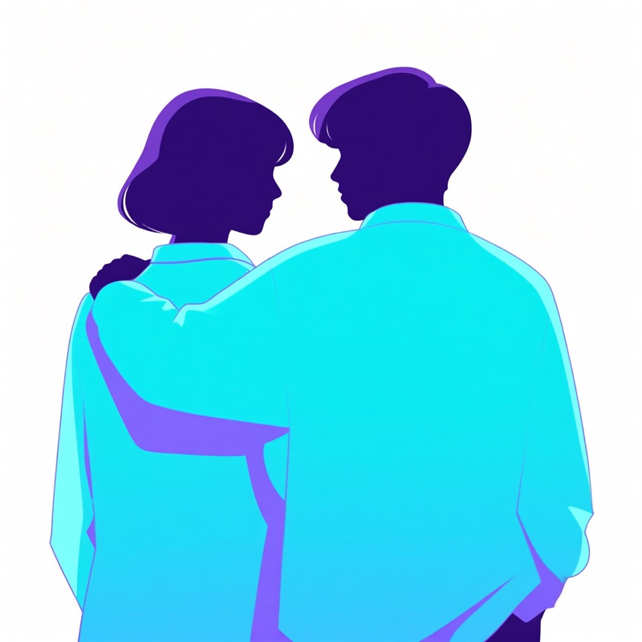

Les autres ne comprennent pas, les pairs oui
« Tant qu'on ne l'a pas vécu, on ne peut pas vraiment comprendre. »
Troisième volet du récit d'une jeune adulte suivie au CEREMAIA : le regard de l'entourage, et ce que seuls ceux qui ont vécu un parcours de santé peuvent partager. Ses mots sont retranscrits tels quels, anonymement et avec son accord.
Le regard des autres, la force des pairs

Le regard des autres, c'était comment ?
Apprendre à être malade, c'est aussi entrer dans un parcours où les autres ne comprennent pas forcément ce qu'on vit.
Qu'est-ce qui te faisait le plus mal ?
Moi, ça me faisait de la peine quand quelqu'un me disait : “En fait, je n'ai pas compris. Tu en es à quelle étape ? Je n'ai pas compris ce que c'est.” Et je devais tout réexpliquer. Ça me faisait de la peine de me dire que la personne n'avait peut-être pas vraiment écouté lorsque je lui avais expliqué les choses.
Tu as posé des limites ?
J'ai donc assez rapidement posé des limites, et je pense que les gens les ont comprises. Soit tu suis mon parcours et tu fais l'effort de comprendre, et dans ce cas tu es évidemment en droit de me poser des questions. Soit tu sais que tu n'as pas fait cet effort, et alors tu peux simplement être là comme soutien émotionnel, mais ne viens pas essayer de faire comme si tu avais suivi quelque chose alors que ce n'est pas le cas.
Pourquoi les pairs, ça change tout ?
Mais il y a vraiment quelque chose qui relève du parcours de santé, particulièrement à l'adolescence ou au début de l'âge adulte : tant qu'on ne l'a pas vécu, on ne peut pas vraiment comprendre. Au début, j'ai beaucoup pleuré à ce sujet, en me disant : “Vous êtes gentils, mais tant que vous n'avez pas vécu ça…”
Tu as trouvé où des gens qui comprennent ?
Donc, dès que je croisais des personnes qui étaient en chambre pour recevoir des traitements intraveineux, même si elles n'avaient pas mon âge ou même si elles n'avaient pas exactement la même maladie, j'allais discuter avec elles. C'étaient les seules personnes qui avaient un parcours suffisamment similaire au mien.
Tu imagines quoi comme solution ?
Ça pourrait donc être intéressant d'avoir quelque chose qui ressemble à ce qui existe dans certains parcours d'addictologie : des tables rondes, des groupes de discussion, des moments permettant de rassembler des personnes qui vivent des parcours similaires, même si elles n'ont pas la même maladie. Je pense que cela pourrait vraiment faire du bien aux adolescents et aux jeunes adultes.
Et toi, tu y irais ?
Ah oui, moi j'adorerais ! Oui, vraiment. Juste pour que tout le monde sache qu'on est dans la même situation, qu'on partage certaines choses et qu'on puisse rire ou pleurer ensemble autour de ce qu'on vit en commun. Moi, ça m'aiderait énormément.

Et le “pair-aidant” ?
Oui. Ça me fait un peu penser à ce qui existe en psychiatrie. Il y a des “aidants pairs”, enfin je ne sais plus exactement comment ça s'appelle : des personnes qui ont déjà vécu la maladie et qui accompagnent ensuite d'autres patients. Ça, ça pourrait vraiment être bien. Moi, par exemple, même si je ne suis pas complètement sortie de mon parcours, je pourrais imaginer faire ça bénévolement et aider des personnes plus jeunes. En psychiatrie, ils ont bien compris l'intérêt d'avoir des personnes qui ont elles-mêmes vécu les choses, parce que cela permet que l'accompagnement ait réellement l'effet recherché. Voilà.

Lire les autres témoignages
Témoignage 1 sur 3
« Devenir quelqu'un de malade ». L'entrée dans le monde de la santé, du jour au lendemain, et la place à prendre dans les décisions.
Témoignage 2 sur 3
MDPH, ALD : énergie perdue, réponses floues. Les démarches administratives vues depuis un parcours incertain.
Tous les récits
Les verbatims des ados et jeunes adultes suivis au CEREMAIA, thème par thème, et d'autres témoignages à écouter ou à lire.